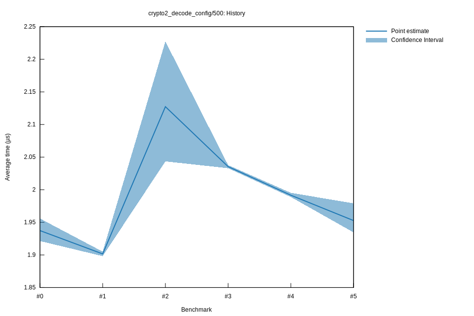

# 52022-10-16T20:11:08+03:00
|
Lower Bound |
Estimate |
Upper Bound |
| Value: |
1.93µs |
1.95µs |
1.98µs |
| Throughput: |
329.30MiB/s |
326.24MiB/s |
321.90MiB/s |
| Change in Value: |
-2.9480% |
-1.9366% |
-0.7792% |
| Change in Throughput: |
+3.0375% |
+1.9749% |
+0.7853% |
No change in performance detected.
# 42022-10-16T17:30:11+03:00
|
Lower Bound |
Estimate |
Upper Bound |
| Value: |
1.99µs |
1.99µs |
2.00µs |
| Throughput: |
320.32MiB/s |
319.87MiB/s |
319.28MiB/s |
| Change in Value: |
-2.4400% |
-2.2176% |
-1.9987% |
| Change in Throughput: |
+2.5010% |
+2.2679% |
+2.0395% |
No change in performance detected.
# 32022-10-15T17:20:52+03:00
|
Lower Bound |
Estimate |
Upper Bound |
| Value: |
2.03µs |
2.04µs |
2.04µs |
| Throughput: |
313.36MiB/s |
312.99MiB/s |
312.63MiB/s |
| Change in Value: |
-1.7156% |
+0.5297% |
+2.4754% |
| Change in Throughput: |
+1.7455% |
-0.5270% |
-2.4156% |
Change within noise threshold.
# 22022-10-15T16:55:04+03:00
|
Lower Bound |
Estimate |
Upper Bound |
| Value: |
2.04µs |
2.13µs |
2.23µs |
| Throughput: |
311.75MiB/s |
299.46MiB/s |
286.01MiB/s |
| Change in Value: |
+4.7328% |
+6.4568% |
+9.1740% |
| Change in Throughput: |
-4.5190% |
-6.0652% |
-8.4031% |
No change in performance detected.
# 12022-10-08T17:31:51+03:00
|
Lower Bound |
Estimate |
Upper Bound |
| Value: |
1.90µs |
1.90µs |
1.91µs |
| Throughput: |
335.62MiB/s |
335.01MiB/s |
334.40MiB/s |
| Change in Value: |
-3.1879% |
-1.9900% |
-1.0170% |
| Change in Throughput: |
+3.2928% |
+2.0304% |
+1.0275% |
No change in performance detected.
# 02022-10-08T17:12:29+03:00
|
Lower Bound |
Estimate |
Upper Bound |
| Value: |
1.92µs |
1.94µs |
1.96µs |
| Throughput: |
331.57MiB/s |
328.83MiB/s |
325.71MiB/s |